AI Inference Engineering & System Design · course project · Anuj Dutt
Serving multi-tenant AI agents on one H100
A gateway in front of vLLM, my own agent harness (tinyharness) as the client, a UI to watch every call,
and 21 experiments on the H100, each written up with its data, failures and fixes
1.8×
goodput from one 16-slot engine vs two 8-slot replicas on the same GPU
+47%
longer agent sessions when admission control improved every latency number
188 → 8
failed calls when a replica died, after a 1-second health check
16 KiB
KV cache per token on the 9B, from its config; vLLM's reported capacity matches exactly
The problem
Agents send many more calls than chat users, and each call resends the conversation so far
Chat request
One call, a ~2K-token prompt, a person waiting. If the server refuses it, the person tries later: the work leaves the system.
Agent team (what I served)
A lead plans and starts 4–8 subagents in parallel. Each turn resends the history, so prompts grow from ~4K to ~35K tokens. Tools run between calls. If a call is refused, the agent retries it: the same work comes back. Three teams share one GPU.
Chat
Agent team
Calls per task
1
50–150
Prompt size
~2K tokens
4K → 35K, mostly the same prefix
A refused call
user goes away
comes back as a retry
Concurrency
independent users
bursts: 8 subagents start at once
The question
When there is more work than the GPU can do at once, where does the waiting happen, and who pays for it?
Capacity: does a second replica on the same GPU add capacity?
Batching: one big engine or two small ones?
Placement: which replica should get a call?
Overload: queue, refuse, or let vLLM absorb it?
Failure: what happens when a replica dies?
Memory: what happens when the KV cache is too small?
How serving works
How vLLM serves one call: wait for a slot, prefill the prompt, then decode one token per step
Slots
+
max-num-seqs = 8: an engine decodes at most 8 calls per step. The 9th waits inside vLLM, where the gateway can't see it.
KV cache and prefix cache
Each running call keeps its prompt's keys and values in GPU memory, in fixed-size blocks. A new prompt that starts with the same blocks reuses them and skips that part of prefill.
Preemption
When the KV pool is full, vLLM drops a running call's KV and recomputes it later. The call still gets its answer, but late.
P/D split
→ KV →
Prefill on one engine, decode on another. The KV moves between them, which only pays if moving it is faster than recomputing it.
vLLM v0.30.0 scheduler · numbers from the Memory bandwidth slide and the KV hand-off baseline (c12)
What I built
The system: a gateway between the clients and vLLM, plus recording and replay
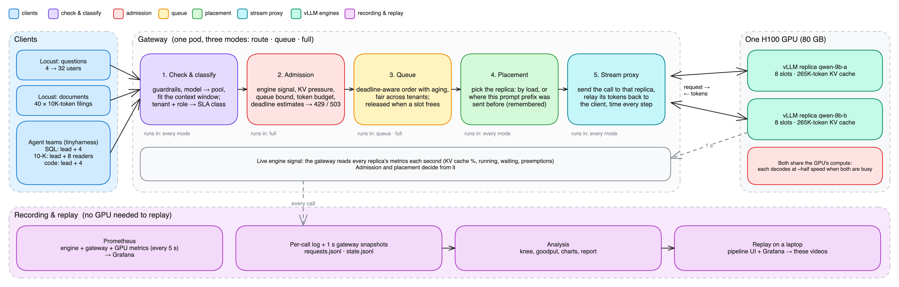
Gateway ~3,700 lines Python
Async rewrite of the class gateway: real streaming, per-role routing, admission, queue, placement, metrics.
Pipeline UI ~3,000 lines JS
One row per call, with what happened to it; live or replayed from a recorded run.
Experiments scripts + logs
23-check gate before each run; prediction committed first; every run's logs, metrics and outputs filed.
Four gateway modes, each adding one feature to the one before
Mode
Classify, fit, stream, measure
Prefix-aware placement
Gateway queue + vLLM priority
Admission (refuse early)
Where extra calls wait
Can refuse?
Used in
baseline
✓
–
–
–
inside vLLM, first come first served; the gateway can't reorder them
no
Exp-2, Exp-2c baseline
route
✓
✓
–
–
inside vLLM, same as baseline
no
most Setup B runs: capacity, placement, agents, small-KV step 1
queue
✓
✓
✓
–
in the gateway: earliest deadline first, aging, fair per tenant; vLLM gets only its 8 slots
503 if the queue is full or a call waits past its budget
overload comparison (c03), queue depth (c05)
full
✓
✓
✓
✓
in the gateway, minus what admission refuses at the door
+ 429 if predicted late; 503 on KV pressure or a stale engine
agents with controls on (Exp-2c), overload (c03), small-KV step 2 (c14)
Admission checks (full mode only), in order
engine signal < 5 s old · KV < 90% · queue below its bound · new sessions only while not busy · tenant token budget · predicted TTFT, first answer, whole call ≤ 1.5 × target (from rates learned on served calls).
Same in every mode
Model chosen by role · max_tokens fitted to the 64K window · every token timed, every call logged. Placement policy is a separate setting.
Harness and applications
Five workloads: three agent teams with gradable tasks, two synthetic loads; some prefill-heavy, some decode-heavy
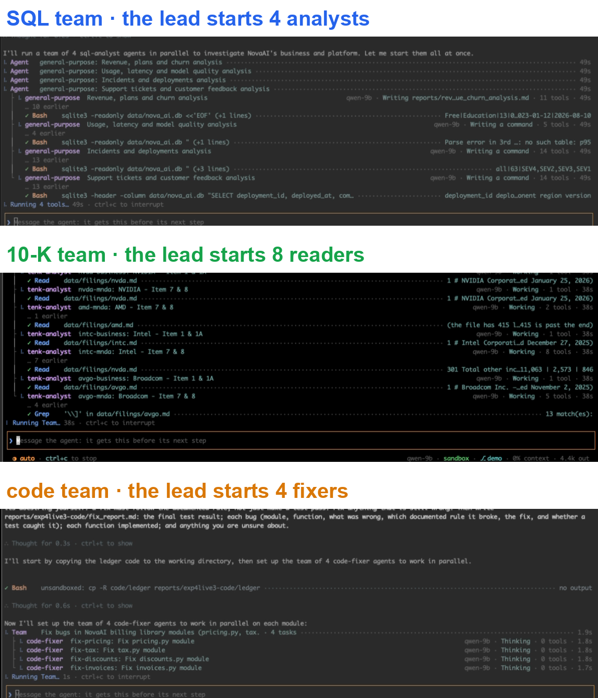
A terminal agent harness I wrote (like a small Claude Code). A lead starts subagents in parallel; only model calls reach the gateway, each tagged X-Tenant · X-Session · X-Agent · X-Role.
49 chat-like questions on a shared 2K-token context
decode-heavy
short cached prompt → 400–1,500 tokens out
on time?
Locust documents
40 distinct 10K-token documents + a one-line question
prefill-heavy
10K tokens in, ≤ 128 out (~80 : 1 before any cache hit)
on time?
Raw prompt:output is 20–30 : 1 for every agent team, because each turn resends the history; counting only the prompt that was really computed (not served from the prefix cache) separates them. Solo runs Exp-1A, 1B, 1C.
tinyharness running the three teams live: each lead starts its subagents in parallel
Screen recording of the live run (c08), 2× speed
1 · The task
Each terminal starts from its task file in workspace/tasks/ (live run c08).
2 · The team
The lead's Team tool starts 4–8 subagents at once; each row is one agent at work.
3 · Tools stay local
sqlite3, Read, pytest run on the laptop; only model calls reach the gateway.
screen recording of the live run · workspace/tinyharness.toml
How results are judged
How I judge a run: calls on time, goodput, and the knee where a setup breaks
On time
A call that met every target for its class. Questions load: interactive first token ≤ 2 s, batch ≤ 30 s. Agents: per-role targets from their solo runs.
Goodput
On-time calls per second. Past 8 users this replica served more calls (2.78 /s) but fewer on time: goodput peaked at 2.24 /s and fell.
Knee
The highest step where ≥ 90% of calls are on time: 8 users, exactly the 8 slots. The 9th user waits, and TTFT jumps from 0.07 s to 1.8 s.
When a change counts
> 15% better than its baseline (repeat runs varied ±5%), against a prediction written before the run. S₂ = whole-GPU tokens/s with two replicas ÷ with one.
The UI shows every call and what happened to it; every clip in this talk is a recorded run, replayed
Replay · Exp-4 full mode, 24 users on 16 slots
Panels follow the request: clients → admission → queue → engines → responses; session timeline and incidents below; findings computed live at the top.
Click a call
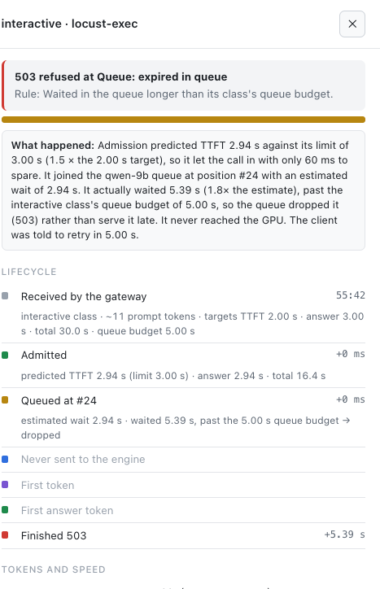
Plain-language explanation of one refused call: predicted 2.94 s vs a 3.00 s limit, queued at #24, waited 5.39 s, dropped with 503 before reaching the GPU.
Models
Both models are hybrids: only 1 layer in 4 keeps a KV cache
From config.json
Qwen3.8-27B-FP8
Qwen3.5-9B
Used in
Setup A: leads, SQL analysts, coders
Setup A: 10-K readers · Setup B: everything
Weights in GPU memory (boot log)
27.64 GiB (FP8)
16.8 GiB (BF16)
Layers
64 = 48 Gated DeltaNet + 16 attention
32 = 24 Gated DeltaNet + 8 attention
Attention heads
24 query, 4 KV, head dim 256
16 query, 4 KV, head dim 256
DeltaNet heads
16 key + 48 value, dim 128
16 key + 32 value, dim 128
Dense or MoE
dense (no experts in config)
dense
every 4 layers:
DeltaNet
DeltaNet
DeltaNet
Attention: keeps KV
Why these models
The 27B is strong at SQL and code; the 9B is ~3× cheaper per token and good enough for reading. Same family, tokenizer and parsers, so one gateway serves both.
Why an H100 SXM
80 GB HBM3 at 3.35 TB/s (decode speed depends on it) and FP8 tensor cores (the 27B's weights and our KV cache are FP8). One card, $4.29/h.
Why HAMi, not MIG
HAMi caps each pod's memory at any size while compute stays shared. MIG would give fixed halves, so one engine could never use the whole GPU.
huggingface.co/Qwen/Qwen3.8-27B-FP8 and Qwen/Qwen3.5-9B config.json · results/box/_cluster/boot-vllm-*.log
KV cache per token
KV cache: 16 KiB per token on the 9B, 32 KiB on the 27B, plus a fixed state per running call
KV per token = 2 (K and V) × attention layers × KV heads × head dim × bytes 9B : 2 × 8 × 4 × 256 × 1 B (FP8 KV) = 16,384 B = 16 KiB 27B: 2 × 16 × 4 × 256 × 1 B (FP8 KV) = 32,768 B = 32 KiB
DeltaNet state per running call (fixed size, fp32), per layer: value heads × 128 × 128 × 4 B + conv state
9B : 24 layers × (32 × 128 × 128 × 4 B + 48 KiB) = 49 MiB
27B: 48 layers × (48 × 128 × 128 × 4 B + 60 KiB) = 147 MiB
One call on the 9B (computed)
KV
+ state
Locust question, ~2.5K tokens
40 MiB
49 MiB
10-K reader, ~10K tokens
160 MiB
49 MiB
Agent lead late in a task, ~35K
560 MiB
49 MiB
Full 64K context
1.0 GiB
49 MiB
For short calls the fixed state is bigger than the KV: the number of running calls costs memory, not only their length.
The same context costs the 27B twice as much as the 9B: KV follows the attention layers, not the parameter count.
Next slide: these numbers reproduce vLLM's reported capacity exactly.
The same arithmetic reproduces the KV capacity vLLM printed at boot, to the token
① Block size
vLLM keeps KV and DeltaNet state in one pool of equal pages. A page must hold one layer's state:
9B state per layer = 2,146,304 B ÷ 2,048 B per token per layer = 1,048 rounded up to a multiple of 16 → 1,056 tokens 27B: 3,207,168 ÷ 2,048 = 1,566 → 1,568
Boot log: block size to 1056 · padding mamba page by 0.76% (27B: 1568, 0.13%). Both match.
② KV capacity (tokens)
vLLM reports how many 64K-token requests fit, × 65,536. Each request needs ⌈65,536 ÷ 1,056⌉ = 63 KV blocks + 2 state blocks for each of 3 DeltaNet groups = 69 blocks.
TTFT 0.37 → 0.13 s (9B), 0.69 → 0.19 s (27B). Design consequence: a shared prefix shorter than one block never hits, so the gateway hashes prompts in ~1K-token blocks and every agent prompt starts with a long identical context.
Decode speed is set by memory bandwidth; the arithmetic predicted the token gaps before the runs
Points computed: decode intensity ≈ calls per step (2 FLOP per 2-byte weight per call); prefill from the measured 0.35–0.40 s for 9.8K tokens (~470 TFLOPS).
Routing by role: each call gets a model, a thinking budget and latency targets
Role (X-Agent-Role)
Model
Thinking
Targets: first token / first answer / whole call
Why
lead (plans, checks, writes the report)
27B
on, medium
4 s / 80 s / 120 s · priority 1
its delay holds up the whole team
subagent: SQL analyst, code fixer
27B
on, medium
4 s / 25 s / 60 s
needs correct SQL and code
subagent on the 9B: 10-K reader
9B
off
3 s / 3 s / 35 s
reading and extraction: fast and cheap
compaction (summarise old turns)
caller's
off
4 s / 4 s / 150 s · 8K tokens
never waits behind a long think
classifier (harness permission check)
9B
off
interactive · 1,024 tokens
it blocks an agent, 5 s timeout
Exp-0 gate · 23 of 23 checks passed before each experiment
Prefix cache: TTFT 0.69 → 0.19 s (27B) on a repeated 8.7K prompt · a client hang-up frees the slot in 0.1 s (logged as 499) · each pod sees only its HAMi slice · exact tokenizer · tool calls and reasoning parsed.
Targets measured, not guessed
1.5 × each role's p95 when its team ran alone (Exp-1). Admission estimates TTFT without prefix-cache credit (33K tokens ÷ 10.5K tok/s = 3.2 s), so the first-token target was set ≥ the prefill time of the largest prompt.
KV moved (1 token recomputed); 2.2–2.5 s vs 0.37 s
slower than recomputing
c12
P/D with Mooncake
same, other connector
0.27–0.30 s; 1,319 MB/s
pays when transfer beats recompute
c13
KV cache too small
4.5 → 1.25 GiB
194 preemptions; full mode refused 2,158/2,158
estimators must not learn only from admits
c14
docs/RESULTS.md
20 agents for 8 slots
Controls on: the served calls looked better, the agents took 47% longer (Exp-2c)
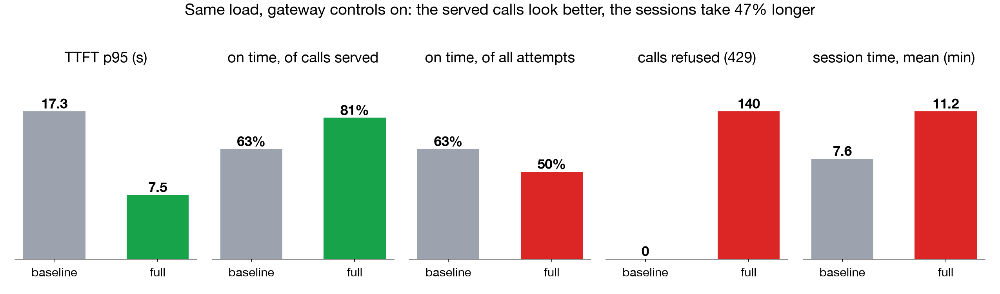
Measured
Baseline
Full
TTFT p95
17.3 s
7.5 s
On time, of calls served
63%
81%
On time, of all attempts
63%
50%
Goodput (on-time calls/min)
13.0
15.5
Refused (429)
0
140 (38%)
Coder agents that died after 5 refusals
0
14
Session time, mean
7.6 min
11.2 min
Test score
15–16 / 16
16 / 16
Every dashboard number improved. But refused calls came straight back: 81 calls retried within 60 s of a 429 (UI findings, last 5 min of the replay); 14 coders ran out of retries and their work was redone.
Refusing doesn't remove agent work; it adds round trips. The prediction failed its own rule (no agent fails from refusals).
Fix to test next: session-aware admission: calls from running sessions wait in the queue; only new sessions are refused.
Setup A could not separate the controls from the two-model mix, so Setup B fixes the model.
Placement results: v1 was borderline; after fixing two bugs, v2 gave +42% with spare slots and +36% when full
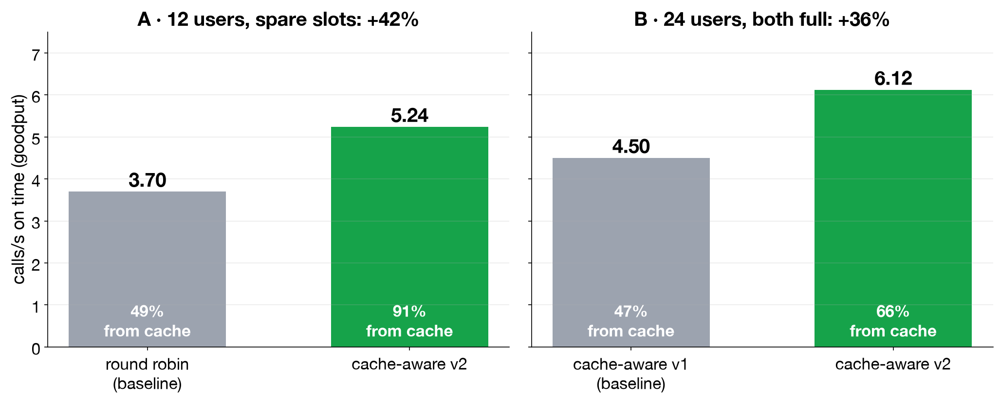
v1's two bugs
Tie-break: always chose replica a. Stale memory: remembered ~3× more than vLLM's 265K-token cache holds, so it sent calls to documents already evicted.
v2
Least-busy replica with a free slot among those holding ≥ 80% of the prefix; memory sized to the real cache.
Cache-aware placement: each call goes back to the replica that holds its document (c10)
UI · queue and engines, cache-aware v2
Queue panel“→ qwen-9b-a · prefix 98%”: placed by prefix
Engines~90% of prompt tokens from cache
Grafanaround robin vs v2, same load
Grafana · round robin
Grafana · cache-aware v2
Overload
Overload results: the queue moved the waiting; served calls per second never changed
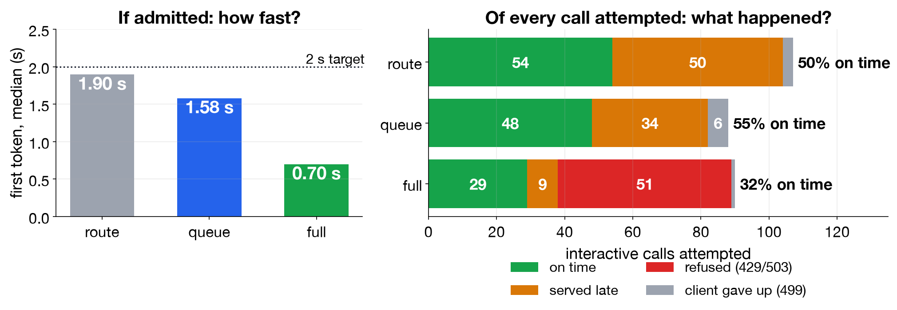
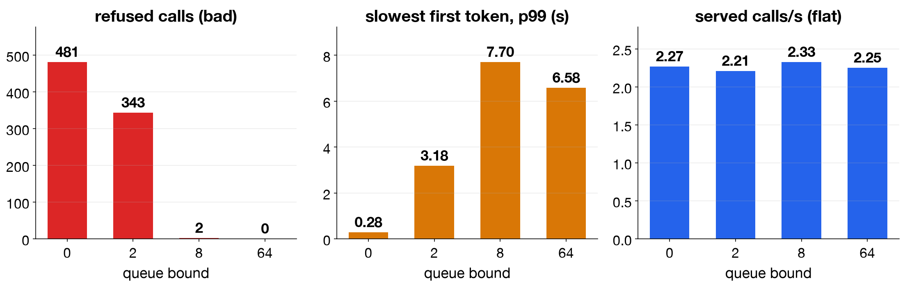
Every number · gateway modes, 24 users on 16 slots (c03)
Mode
Interactive on time: of served / of attempts
TTFT p50
Refused
Waiting inside vLLM
route
52% / 50%
1.90 s
0
~2.4 per replica
queue
59% / 55%
1.58 s
0
0
full
76% / 32%
0.70 s
51 of 90
0
Every number · queue bound, queue mode (c05)
Bound
Served /s
Refused
TTFT p99
Goodput /s
0
2.27
481
0.28 s
2.27
2
2.21
343
3.18 s
2.17
8
2.33
2
7.70 s
1.98
64
2.25
0
6.58 s
1.85
Admission's estimate missed in both directions. It refused 51 of 90 interactive calls although route mode put 52% on time, and 6 calls it admitted were late anyway: actual TTFT 1.6× its prediction, mostly queue wait (20 agents, Exp-2c: 7 calls at 1.9×).
A deeper queue trades refusals for waiting. Served calls per second stay the GPU's (~2.25).
docs/experiments/c03.md, c05.md · docs/RESULTS.md
Failure · replay
What happens when a replica dies mid-run? Before and after a health-check fix (c06)
UI · before (left) and after (right)
Beforeevery other call: 503 engine unreachable
Afterb marked down 2 s after the kill
Kubernetes~130 s to bring b back, either way
Grafana · before
Grafana · after
Failure
Replica failure: 188 failed calls before the fix, 8 after (c06)
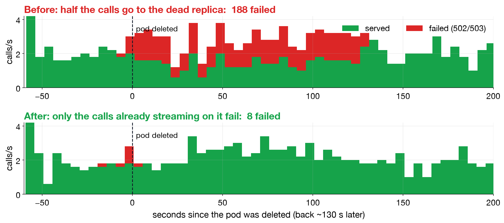
8 / 188 = 4.3% ≤ 5%: fix confirmed.
The fix: route only to replicas whose metrics answered in the last 1 s; mark one down on the first refused connection.
Recovery time is Kubernetes'; the gateway can only stop sending calls to the dead pod.
Alive ≠ ready: before the fix, the first calls to the returning pod were sent before it was Ready and waited 4.2 s (0.22 s after). The 8 that still failed were mid-stream on the dead pod; only a retry saves those, not built yet.
Every number · 16 users, qwen-9b-b's pod deleted at 60 s
FullKV 0%, engines empty; TTFT estimate 1.86× of 1.5× → 429 in ~3 ms
Learned prefill rate19,357 → 2,670 tok/s, flat
Memory · results
Small KV cache: route mode slow as predicted; full mode refused all 2,158 calls (c14)
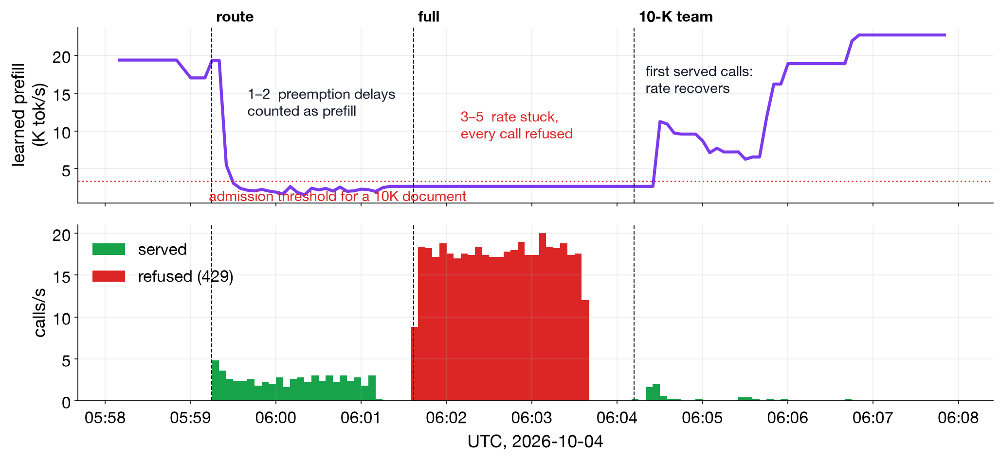
Route: as predicted
~5 of 8 running, matching the 4.8 computed. Every call answered, late.
Full: my bug
Admission learns prefill speed from served calls (dispatch → first token), so preemption delays counted as prefill: 19K → 2.7K tok/s. The mode switch reset vLLM, not this estimate: every call looked late → refused → no new sample.
Every number · 24 users, Locust documents
Run
Goodput /s
TTFT p50 / p99
Running / waiting per replica
From cache
Preemptions
Refused
normal cache 4.5 GiB, route (c02)
4.56
1.01 / 3.87 s
7.1 / 0.9
48%
0
0
small cache 1.25 GiB, route
0.09
4.40 / 10.83 s
5.3 / 4.5
6%
194
0
small cache 1.25 GiB, full
0
–
0 / 0
–
0
all 2,158: 429 ttft_unmeetable
10-K team, small cache, route
finished in 2.5 min with citations
10
0
docs/experiments/c14.md · docs/RESULTS.md
P/D · the bet
Prefill/decode split: moving the KV has to beat recomputing it
Can two 9B replicas serve the agent teams? Serving held; 9B-led reports were less reliable (c07, c08)
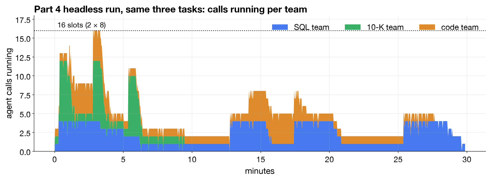
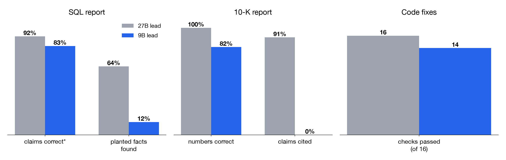
Every number · three teams, every agent on qwen-9b, route mode
Team
Headless (c07): session · calls
Live (c08): session · calls
Live-run output, fact-checked (9B lead)
27B lead, earlier
SQL
30 min (cap) · 304
9.5 min · 94
49 of 59 claims right or nearly; 3 of 25 planted facts
16 of 25 facts; 92% of claims
10-K
9.4 min · 83 (ran its team 3×)
8.5 min · 76
23 of 28 numbers right; 0 citations (lost on compaction)
32 of 32 cells; ~50 citations
Code
30 min (cap) · 220
12.6 min · 156
14 of 16 hidden checks; 56 of 56 visible tests
16 of 16
Fleet
607 calls: 300 / 307 per replica
77% of prompt tokens from cache · KV peak ~62% · 0 preemptions
docs/experiments/c07.md, c08.md · fact-check of results/outputs/exp4live3-*
Summary
What I would deploy, and the run each rule came from
1
Work out KV and bandwidth from the config firstblock size, capacity, transfer size and token gaps all matched
exact
2
Route by role: model, thinking, targetswith a 9B lead: fewer facts found, no citations (Exp-1 vs c08)
12 vs 64%
3
Admit agents by session, not by callbetter latency numbers, slower sessions (Exp-2c)
+47%
4
On one GPU, batch before you replicateone 16-slot engine vs two 8-slot replicas (c09)
1.8×
5
Cache-aware placement needs an accurate view of the cachespare slots (c10) / saturated (c11)
+42 / +36%
6
Size the queue from the latency targetsame throughput, p99 0.28 → 6.6 s (c05)
2.25 /s
7
Route only to replicas with a fresh health signalfailed calls during a replica kill (c06)
188 → 8
!
Don't let an estimator learn only from what it admitspreemption poisoned it, and it survived the mode switch (c14)
2,158 / 2,158
Limits and next steps
Limits of these results, and what I would test next
Limits
One shared H100: these results are about the serving layer, not hardware scaling. Capacity numbers come from synthetic load; agent runs vary run to run. One run per variant, except the replica and placement tests (c01, c02), which were repeated (±5%). P/D: 4 documents over TCP, no load.
Next
Session-aware admission: queue running sessions, refuse only new ones, and re-run Exp-2c. An estimator that decays, probes, and resets when the config changes (c14). Two GPUs: do replicas then add speed, and do these rules still hold?
Thank you.
Questions?
Every run is reproducible: README.md · per-experiment pages: docs/experiments/ · run data and replays: the shared Drive folder
Appendix · Index
Appendix: backup slides for questions
Slide
Topic
A2
tinyharness
A3
The three applications
A4
Datasets
A5
Task prompts
A6
Load for measurement
A7
How results were judged
A8
GPU sharing
A9
Full serving pipeline
A10
Setup A · Exp-0 to Exp-2
A11
Each team alone
A12
Two teams · setup
A13
Two teams · replay
Slide
Topic
A14
Two teams · results
A15
Overload with agents · setup
A16
20 agents: refusals in detail
A17
Setup B · Exp-4
A18
Every Exp-4 case
A19
Capacity · setup
A20
Second replica · replay
A21
One big engine · replay
A22
Placement · setup
A23
Overload · setup
A24
Overload · replay
A25
Route, queue and depth replays
Slide
Topic
A26
Failure · setup
A27
Replica kill replays
A28
Memory · setup
A29
Memory · the loop
A30
Memory test in detail
A31
KV hand-off
A32
KV hand-off · results
A33
P/D connector diagnostics
A34
Agents · setup
A35
Agents · replay
A36
Everything that went wrong
Press A to jump here; the full experiment scope is on the two all-experiments slides of the talk.
Appendix · tinyharness
tinyharness is my own agent harness; here it is the client for three tenants
A separate project I wrote: a terminal agent harness (like a small Claude Code). The demo uses it unchanged and only configures it.
A lead agent plans, then its Team tool starts subagents in parallel. Agents are defined in .tinyharness/agents/*.md: sql-analyst, tenk-analyst, code-fixer.
Tools run on the laptop (read-only sandbox); only model calls go over the network, to my gateway.
Every call carries X-Tenant · X-Session · X-Agent · X-Role headers (send_ids = true), so the gateway knows who is asking.
It handles long histories (compaction into a summary) and retries 429/503 after Retry-After.
provider = "gw" # the gateway, through the SSH tunnel
model = "gw:qwen-9b" # Setup B; Setup A pinned agents to qwen-27b / qwen-9b
request_retries = 4 # 429 / 503 are retried after Retry-After
max_parallel_agents = 8
[providers.gw] send_ids = true context = 65536 tokenizer = "Qwen/Qwen3.5-9B"
[providers.gw-fast] chat_template_kwargs = { enable_thinking = false } # 10-K readers
workspace/tinyharness.toml · workspace/.tinyharness/agents/ · workspace/th (one terminal per tenant)
Appendix · The three applications
Three tenants, three tasks, three outputs
Tenant
Task (workspace/tasks/)
Data
Team
Output
SQL
What happened to NovaAI's business, Mar–Aug 2026? Reconcile 4 areas; write the report with the SQL behind each finding
NovaAI ops DB (SQLite, 85 MB): 8 tables, 245K usage events; 25 planted facts for grading
lead + 4 sql-analysts
nova_report.md + .html
10-K
Compare 4 annual reports: revenue, growth, margins, segments, risks, AI position; cite every claim
Fix NovaAI's billing library: failing tests, bugs no test catches, missing functions; add tests
code/ledger: pricing, tax, discounts, invoices
lead + 4 code-fixers (one per module)
fixed package + fix_report.md
Shape, from the solo runs (uncached prompt : output): SQL decode-heavy 2.6 : 1 · 10-K prefill-heavy 8.5 : 1 · Code decode-heavy 3.4 : 1. Graded afterwards: SQL against 25 planted facts, 10-K citations against the filings, code against 16 hidden checks.
10-K report (27B lead), every claim cited
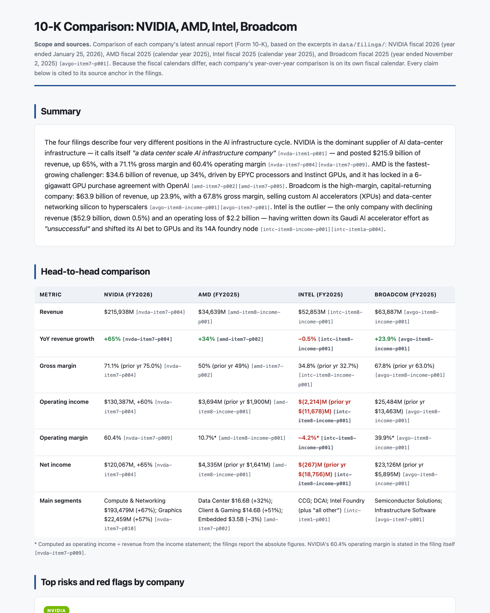
SQL report (27B lead)
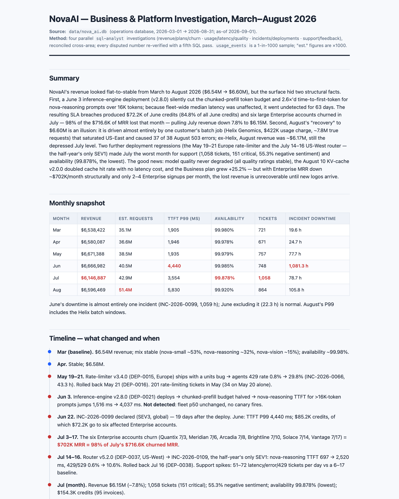
Appendix · Datasets
The data behind the three applications
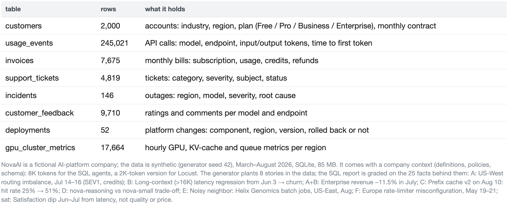
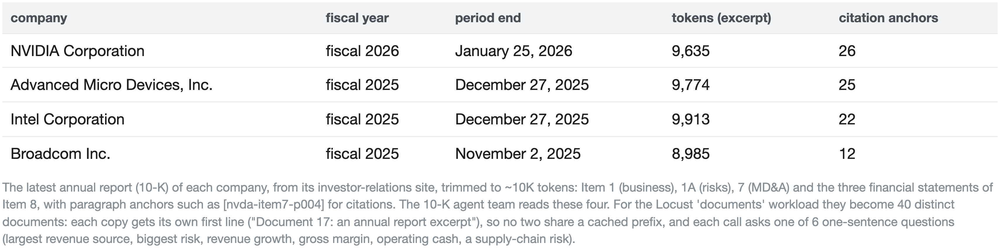
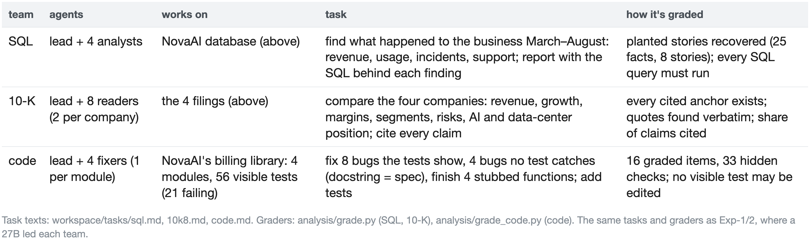
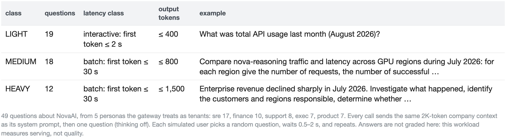
Appendix · Task prompts
The three task prompts the leads receive, verbatim
SQL · workspace/tasks/sql.md
Investigate what happened to NovaAI's business and platform from March to August 2026, using the operations database data/nova_ai.db.
Run a team of 4 sql-analyst agents in parallel, one per area:
1. revenue, plans and churn
2. usage, latency and model quality
3. incidents and deployments
4. support tickets and customer feedback
When they report back, reconcile their findings: where two areas point to the same cause, connect them; where they disagree, check the numbers with one more sql-analyst. Then write the report, in both formats:
- {{OUT}}/nova_report.md
- {{OUT}}/nova_report.html (self-contained, no external assets)
The report: a one-paragraph summary; a timeline of what changed and when; the 5 most material findings, each with its numbers, the SQL that shows it and what caused it; and open questions.
10-K · workspace/tasks/10k8.md
Compare the four semiconductor companies' annual reports in data/filings/: NVIDIA (nvda.md), AMD (amd.md), Intel (intc.md) and Broadcom (avgo.md).
Run a team of 8 tenk-analyst agents in parallel, two per company:
- one for Item 1 (Business) and Item 1A (Risk Factors),
- one for Item 7 (MD&A) and the financial statements (Item 8).
Each reads its company's whole excerpt but reports only on its own items, with verbatim evidence and source anchors.
Then write the comparison, in both formats:
- {{OUT}}/10k_report.md
- {{OUT}}/10k_report.html (self-contained, no external assets)
The report: a one-paragraph summary; a table comparing the four on revenue, growth, gross and operating margin, and their main segments; each company's top risks and red flags; and how their positions differ in AI and data-center demand. Cite every claim with its source anchor, e.g. [nvda-item7-p004]. Use only what the analysts found in the filings.
Code · workspace/tasks/code.md
NovaAI's billing library in code/ledger is unfinished and buggy: some tests fail, some functions aren't written yet (they raise NotImplementedError), and the tests don't catch every bug. Each module's docstring is its specification.
First copy it to your own working copy with exactly this command, nothing before it: `cp -R code/ledger {{OUT}}/ledger` (it creates {{OUT}}/ledger; leave code/ledger unchanged). Then work only there, and give each code-fixer the package directory {{OUT}}/ledger.
Run a team of 4 code-fixer agents in parallel, one per module of {{OUT}}/ledger/ledger/:
1. pricing.py (tests/test_pricing.py)
2. tax.py (tests/test_tax.py)
3. discounts.py (tests/test_discounts.py)
4. invoices.py (tests/test_invoices.py)
Each one, in its module: fixes the bugs the tests show; reviews every function against the module's docstring and fixes the bugs no test catches; implements the unfinished functions to the docstring; and adds a test for each bug it fixed and each function it wrote, in a new file tests/test_<module>_extra.py (the existing test files stay unchanged).
When they report back, run the whole test suite from {{OUT}}/ledger (`python3 -m pytest -q -p no:cacheprovider`) and review each module against its docstring yourself: a fix must follow the documented rule, not just make a test pass. Fix anything that is still wrong. Then write {{OUT}}/fix_report.md: the final test result; each bug (module, function, what was wrong, which documented rule it broke, the fix, and whether a test caught it); each function implemented; and anything you are unsure about.
Appendix · Load for measurement
Two synthetic loads (Locust) for repeatable numbers, next to the agent teams
Load
What one user does
Why
Questions
Picks one of 49 NovaAI questions (5 tenants, same 2K-token context), streams the answer (400 / 800 / 1,500 tokens), waits 0.5–2 s, repeats. Interactive calls: first token ≤ 2 s; batch: ≤ 30 s
Chat-like load; capacity is counted in slots. Used for capacity, batching, overload, kill tests
Documents
Sends one of 40 distinct ~10K-token documents (copies of the 4 filings, each with a unique header) + a one-line question; ≤ 128 tokens out
40 × 10K = 400K tokens: more than one replica's 265K-token KV cache, less than two. Used for placement, memory pressure, P/D
Ramp
Steps
Users
4 → 8 → 16 → 24 → 32, 45 s each (knee tests); fixed 12, 16 or 24 users for the A/B tests
Class
Count
First token
Tokens out
LIGHT (interactive)
19
≤ 2 s
≤ 400
MEDIUM (batch)
18
≤ 30 s
≤ 800
HEAVY (batch)
12
≤ 30 s
≤ 1,500
Why not only agents?
Agent runs differ every time (the model decides what to do). Locust gives the same load every run, so A/B comparisons are fair. Agents show what actually breaks.
app/locustfile.py · docs/MODELS_AND_MEMORY.md
Appendix · How results were judged
How results were judged, and the Exp-4 timeline
Rule
Value
Sustained
≥ 90% on time, no failures
Knee
highest sustained step, all lower steps sustained
Scale-out
S₂ ≥ 1.3, or the knee moves
Placement adds value
> 15% goodput or TTFT p95/p99 (repeats ±5%)
P/D go
≤ 5% recomputed, identical answer
Kill fix
after ≤ 5% of before
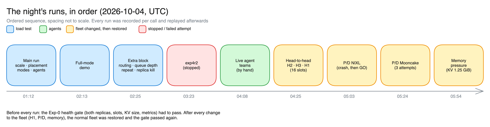
Appendix · GPU sharing
HAMi vs MIG vs one engine, and the GPU counters
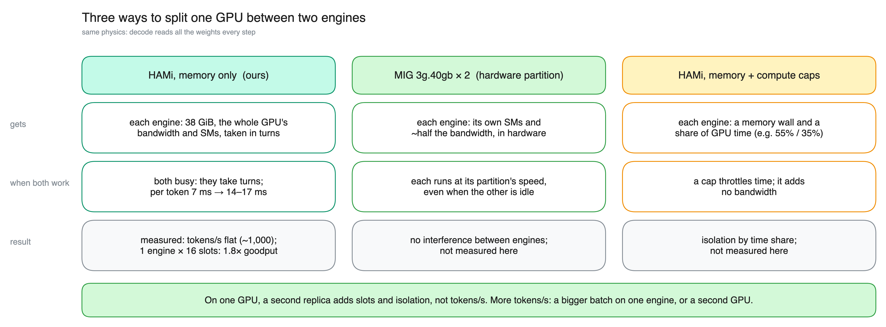
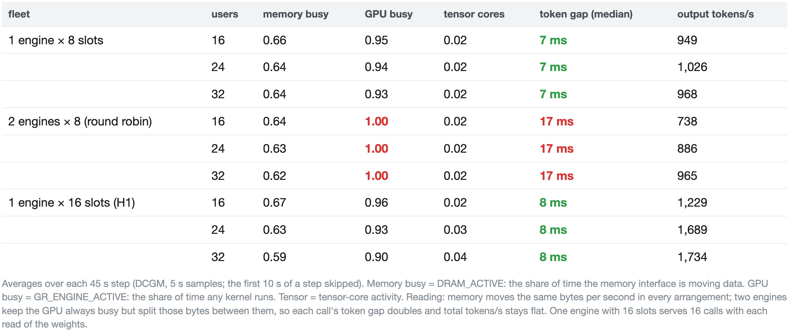
Appendix · Full serving pipeline
The full serving pipeline, as built
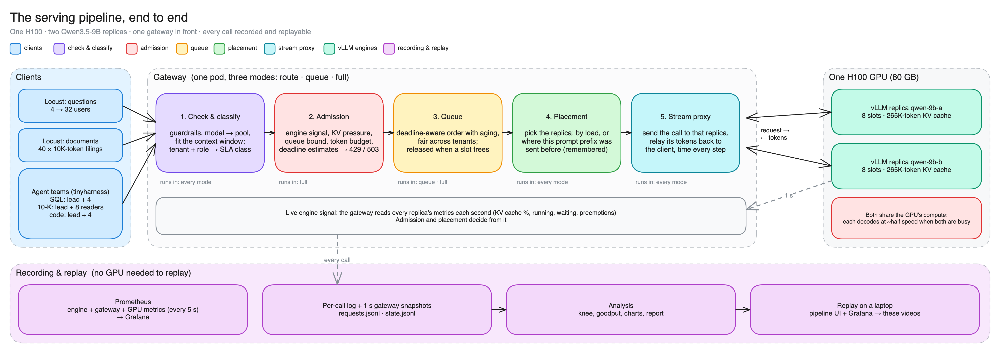
Appendix · Setup A · Exp-0 to Exp-2
Setup A: the 27B and the 9B, each in its own HAMi slice of one H100
HAMi makes each pod see its slice as the whole GPU, so --gpu-memory-utilization 0.95 means 95% of the slice
KV pool = 0.95 × slice − weights − runtime 27B: 43.7 − 27.6 − 3.4 =12.7 GiBcard left unsliced: 3.1 GiB
27B
9B
KV pool (boot log)
12.72 GiB
9.93 GiB
KV capacity
361,813 tok
585,075 tok
Full 64K calls that fit
5.5
8.9
Slots (max-num-seqs)
8
8
Max context
65,536
65,536
Sized bottom-up: the 27B gets the bigger slice because its weights take 60% of it.
64K window per call = prompt + max_tokens; the gateway lowers max_tokens to fit (leads ask for up to 32K).
Compute is not split: no gpucores cap, so the two engines take turns on the GPU.
How fast and how good is each application on its own? (Exp-1)
Run
Team
Time
Output quality (graded)
Exp-1A
SQL: 27B lead + 4 analysts (27B)
17.7 min
16 of 25 planted facts (64%), 6 of 8 stories, 11 of 11 SQL queries run
Exp-1B
10-K: 9B lead + 4 readers (9B)
3.1 min
82 of 82 citations real; 25 of 28 table numbers right
exp1b-27b
10-K: 27B lead + 4 readers (9B)
9.0 min
113 of 113 citations real; every dollar figure verbatim (it re-checked the analysts' numbers)
Exp-1C v2
Code: 27B lead + 4 fixers (27B)
3.7 min
16 of 16 checks; 56 of 56 visible tests
What these runs gave the serving experiments
Each role's solo p95 latency (→ the SLA targets), how busy each team keeps the GPU (SQL 1.5 calls running on average, coding 1.9, 10-K with 27B lead 0.9), and quality numbers to check that load didn't change the answers.
SQL: growing histories (4K → 35K tokens), 1–3K tokens out per turn · 10-K: ~10K-token filing per reader, thinking off
Measured
waiting inside vLLM, token gap per model, per-role latency, both reports' quality
Prediction (written before the run)
“B's synthesis call waits behind A's stream of SQL turns. Tail latency blows up, and the waiting happens inside vLLM where nobody can see or reorder it.”
What would show it
vLLM 'waiting' > 0 on the 27B; the leads' first-answer p95 well above their solo values.
docs/experiments/exp2.md
Appendix · Two teams · replay
What happens when two agent teams share the GPU? (Exp-2)
UI · queue and engines panels
Queue panellead → qwen-27b, tenk-analyst → qwen-9b: routed by role
Engines4 of 8 slots on the 9B, 1–2 on the 27B; 0 waiting
Window21:28–21:30 UTC, 2× speed
Grafana · engines
Grafana · agent latency
Appendix · Two teams · results
Two teams: nothing queued; the only slowdown came from sharing the GPU (Exp-2)
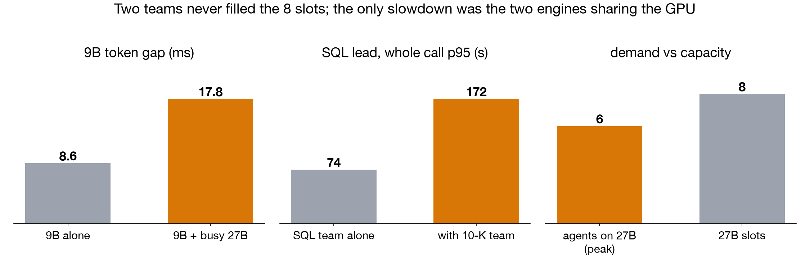
Measured
Alone
Two teams
Calls waiting inside vLLM (peak)
0
0
Agents on the 27B (peak) / slots
–
6 / 8
9B token gap
8.6 ms
17.8 ms
SQL lead, whole call p95
74 s
172 s
Both reports
–
finished: A 13.6 min, B 9.9 min
Demand never exceeded the 8 slots, so nothing queued: the prediction assumed more demand than there was.
The 9B slowed 2× while the 27B decoded: the two engines take turns on the GPU (floor 14 ms, from the bandwidth slide). No gateway control can see or fix this.
To overload the 27B, I needed more agents: the next run uses 4 coding sessions.
admission (refuse a call if its predicted TTFT > 1.5 × target, 429 + Retry-After) + deadline queue + priorities
Same
task, harness version, caches reset; only the gateway mode changes
Measured
TTFT, share on time, goodput, refusals, session time, test score
Prediction
Baseline: calls wait in vLLM, TTFT p95 10–40 s, 30–60% on time. Full: waiting moves to the gateway queue, more calls on time, a few refusals (≤ 5%), all retried.
Risk I named before the run
Admission was designed for chat, where a refused request goes elsewhere. An agent's next call has nowhere else to go. If full mode refuses a lot, that is the finding.
docs/experiments/exp2c.md
Appendix · 20 agents: refusals in detail
Exp-2c: session timeline with refusals, and why calls were refused
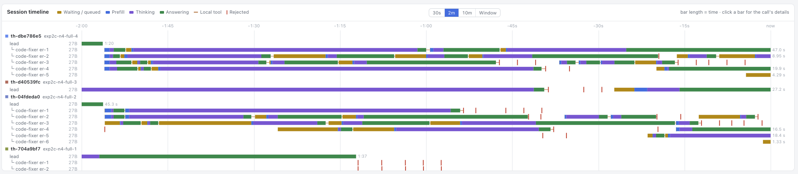
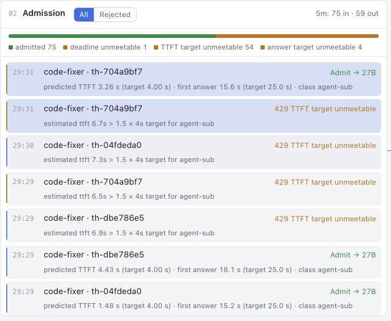
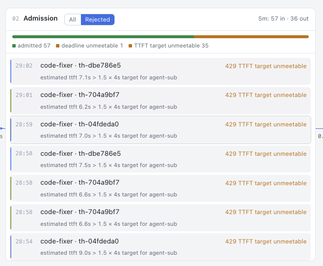
Appendix · Setup B · Exp-4
Setup B: two identical Qwen3.5-9B replicas, each in a 38 GiB slice of the same H100
0.27–0.30 s; 1,319 MB/s; 1 of 4 differs by 3 words
strict no-go
c14
KV 1.25 GiB
preemption; full → kv_pressure
194 preemptions; goodput 4.56 → 0.09; full refused 2,158/2,158
full ✗
Appendix · Capacity · setup
Does a second replica on the same GPU add capacity? Is one big engine better? (c01, c09)
Load
Locust questions, 4 → 8 → 16 → 24 → 32 users, 45 s per step; 400–1,500 tokens out, thinking off
One replica (c01)
only qwen-9b-a receives calls (b deployed, idle)
Two replicas (c01)
both replicas, round robin
One 16-slot engine (c09)
qwen-9b-a only with --max-num-seqs 16 (same 16 slots in total, same 4.5 GiB KV)
Gateway
route mode: no admission, no gateway queue
Repeated
both runs done twice (Part 1 and repeat C)
Measured
share on time per step → knee; tokens/s; token gap
Prediction
Second replica: knee ~8–10 users with one replica, ~14–18 with two; throughput ratio S₂ = 1.3–1.7. One 16-slot engine sustains 16 users at ≥ the goodput of two replicas, token gap 7–10 ms.
From the bandwidth slide
Each engine reads 18 GB of weights per step from the same memory, so the token gap should roughly double and total tokens/s should stay about the same.
docs/RESULTS.md· experiments/exp4_scale.sh
Appendix · Second replica · replay
One replica vs two: twice the slots, half the speed per call (c01)
UI · engines, one replica vs two
One replica, 8 users8 slots busy, token gap 7 ms
Two replicas, 16 users16 slots busy, token gap 15–17 ms
Whole GPUtokens/s about the same
Grafana · one replica
Grafana · two replicas
Appendix · One big engine · replay
One 16-slot engine: 12–16 calls at once, 8 ms between tokens (c09)
UI · engines panel
Slots12–16 of 16 running in one engine
Token gap8 ms (two engines: 14–17)
Grafanasame window, replayed from Prometheus
Grafana · scale
Grafana · latency
Appendix · Placement · setup
Which replica should get each call? (c02, c10, c11)
gateway holds the overflow in its own queue: deadline order, aging, fair turns
Full mode (c03)
queue + admission: refuse (429) what it predicts will miss its target
Queue depth (c05)
queue mode with a queue bound of 0, 2, 8 or 64 calls
Measured
where calls wait, on-time share (interactive first token ≤ 2 s), refusals, TTFT p99, served/s
Prediction
c03: queue moves the waiting from vLLM into the gateway; full refuses some LIGHT calls. c05: the same served/s at every depth; deeper means fewer refusals and a higher p99.
Little's law (computed)
wait ≈ calls ahead ÷ service rate. At ~2.25 served calls/s, a 2 s first-token target allows ~4–5 calls in the queue.
docs/RESULTS.md
Appendix · Overload · replay
With more calls than slots, should the gateway queue them, refuse them, or let vLLM hold them? (c03, c05)
UI · admission and queue
AdmissionTTFT-estimate bar past 1.5 × target → 429
Queuenext = earliest deadline; interactive ahead of batch
Grafanaadmitted vs shed; queue length
Grafana · gateway
Grafana · queue
Appendix · Route, queue and depth replays
Route vs queue: the full replays
route
queue
queue bound 0
queue bound 64
Appendix · Failure · setup
What happens when a replica dies mid-run? Setup (c06)
Load
Locust questions, 16 users, round robin over both replicas
Failure
qwen-9b-b's pod deleted at 60 s; Kubernetes rebuilds it
Run D · before
the original gateway
Fix
route only to replicas whose metrics answered in the last 1 s; mark one down on the first refused connection
Run E · after
same test with the fix
Measured
failed calls, detection time, time until the new pod gets traffic
Prediction
D: about half the calls fail until b is back. E: ≤ 5 failures (only calls already streaming on b).
Rule fixed before E
The fix works if E's failures ≤ 5% of D's.
docs/RESULTS.md
Appendix · Replica kill replays
Replica kill: full replays
before
pod returns
after
Appendix · Memory · setup
What happens when the KV cache is too small for the load? (c14)
Change
both replicas redeployed with KV 1.25 GiB (was 4.5); 8 slots kept
Load
Locust documents, 24 users: route mode for 120 s, then full mode; then the 10-K team
Measured
running vs waiting, preemptions, cache hits, goodput, refusals, the gateway's learned prefill rate
1.25 GiB ÷ (8 layers × 2,162,688 B) = 77 blocks per replica
one ~10K-token document = ⌈9,813 ÷ 1,056⌉ = 10 KV blocks + up to 6 state blocks = 16 blocks
77 ÷ 16 = 4.8 documents fit at once < 8 slots (computed) normal 4.5 GiB: 279 ÷ 16 = 17 fit, so 8 slots were never short
Prediction
Route: preemptions, fewer than 8 running, long TTFT. Full: admission sheds with 503 kv_pressure; the agent team still finishes.
What vLLM does when KV runs out
It preempts a running call: drops its KV and recomputes it later. The call still gets an answer, but late.